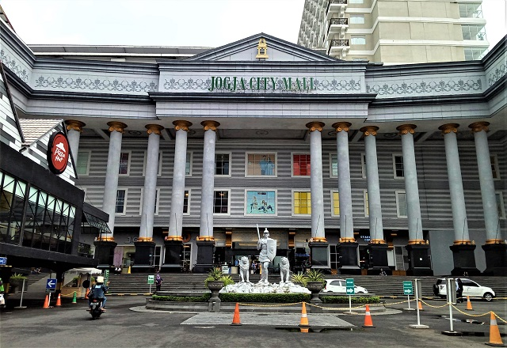

Malioboro Mall
Lokasi : l. Malioboro No.52-58, Suryatmajan, Kec. Danurejan, Kota Yogyakarta, Daerah Istimewa Yogyakarta.
Buka : 10.00 - 21.00 WIB
Maps
Ambarrukmo Plaza
Lokasi : Jl. Laksda Adisucipto No.80, Ambarukmo, Caturtunggal, Kec. Depok, Kabupaten Sleman, Daerah Istimewa Yogyakarta
Buka : 10.00 - 21.00 WIB
Maps

Jogja City Mall
Lokasi : Jl. Magelang 18 No.6, Kutu Patran, Sinduadi, Kec. Mlati, Kabupaten Sleman, Daerah Istimewa Yogyakarta
Buka : 10.00 - 21.00 WIB
Maps
Sleman City Hall
Lokasi : Jl. Magelang Jl. Gito Gati No.KM 9, Denggung, Tridadi, Kec. Sleman, Kabupaten Sleman, Daerah Istimewa Yogyakarta
Buka : 10.00 - 21.00 WIB
Maps
Hartono Mall
Lokasi : Jl. Ring Road Utara, Kaliwaru, Condongcatur, Kec. Depok, Kabupaten Sleman, Daerah Istimewa Yogyakarta
Buka : 10.00 - 21.00 WIB
Maps
Lippo Plaza
Lokasi : Jl. Laksda Adisucipto No.32-34, Demangan, Kec. Gondokusuman, Kota Yogyakarta, Daerah Istimewa Yogyakarta
Buka : 10.00 - 21.00 WIB
Maps